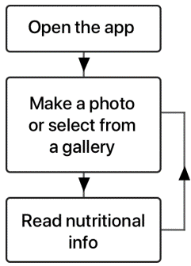

I successfully complete the summer-school in Big Data Analytics at KTH (Stockholm) virtually and I move to Helsinki to finish my MSc at Aalto University
2019
I am awarded a scholarship to complete my degree at the Beijing Institute of technology, where I write my thesis on blockchain's consensus algorithms, which concludes my degree. I am admitted and start the MSc in Human Computer interaction at UPM (Madrid).
2015
I successfully graduate high-school and I am admitted in the "Mathematics and Computer Science" degree at UPM (Madrid).
2013
I move back to Madrid to take the university admission exams
2009
My family moves to Melbourne (Australia) and I am enrolled in a bilingual (French-English) highschool.
2004
My family moves to Ankara (Turkey) and I continue my French education.
This project was done in the “Image Mining” class at UPM for the Human Computer Interction and Design MSc. The code is available on Github. The emphasis of this project was put in the backend side. Therefore, the most challenging part was to understand the machine learning and deep learning aspects. Read the full paper
Problem
How to classify and return nutritional information of food items with maximum efficiency and minimum time?
Users and audience
Even though the app was not tested with real users, we believe this app could have different applications:
Informing about possible allergies for ingredients in a product
A guide for people with vision problems
App for calculating stocks in a shop
Roles and Responsabilities
I was in charge of building the classifier and the programming of the API REST (with another colleague) to connect the app with our Python classifier. My other colleagues were in charge of the UI and user flow, which can be seen in the Process section. The last task, when the project had some results to analyze consisted in performing an error analysis to discover common patterns between misclassified images to modify our architecture and improve our classifier.
Process
The first we had to find was nutritional information regarding different types of food. We created a dataframe with the filename, the type of food and some nutriotional information. Then, we vectorized the images and we used the image’s pixels and histogram for classification. We did not obtain great results, so we tried deep learning with a simple CNN architecture. This was not working properly, so we hypothesized something was wrong with our data set. Sure enough, the vectorization was interrupted in the middle of the calculation so some images were missing pixel values. We recomputed everything and once we saw some improvement with a simple CNN we tried transfer learning. Parallelly we started building our application, which was simple enough (check the Accuracy and error analysis image) user flow in the next image. We created the following list, with an explanation for some of the most common errors:
Non-food images
Too much information in the image
Similar format, which leads to misclassification, due to the pixels' resemblance
More than one food item in the image
Backgrounds too big compared to the food
Error analysis for the "apple-pie"

User flow
Outcomes and lessons
As a team, we were happy with the results we obtained, but we think more computational power (something else instead of Google Collab), would have allowed us to perform the calculations faster and maybe even classify more classes. If we had more time image segmentation would have been another approach we could have tried as many images contained information that was not beneficial. Finally, we think we could have tried other transfer learning algorithms.
Table top Simulator
Overview
This project was done in the HCI Project class at UPM (Human Computer Interaction and Design MSc), during the year 2019-2020. The goal was to follow the UCD (User Centered Design) methodology to design a fun table-top gaming platform.
Problem
How to incorporate the roles of game player and creator in a new and innovative platform?
Users and audience
We were targeting table-top players, keen on trying a new solution for their game-playing necessities.
Roles and responsabilities
We were a team of four students and for academic purposes we tried to rotate the roles. However, due to the language barrier, I was the person in charge of conducting the interviews in Spanish.
Process
We applied the User Centered Design process. In total, we went through different phases, including:
The idea and project description
As a team we came up with the idea and started analyzing it under different perspectives.
An initial planning
We created an initial planning to achieve our solution on time.
Analysis of the context of use
We had various interview sessions with game players and a couple of interviews with game creators (one of them a professional game creator), as well. Finally, we went to a Boardgame Café in Madrid to observe some players and ask them some brief questions.
Low fidelity prototypes
We designed two prototypes, with distinct functionalities and use cases. To better understand the different designs, we used two scenarios illustrating how these prototypes would be used in different settings. Finally, we planned the usability testing process, including the introductory test, the tasks to be carried out by the participant and an informed consent where we asked the participant permission to record them while performing the tasks. Below are the videos of both prototypes:
Usability testing of the low fidelity prototype
In this phase, we wanted to determine the preferred prototype. There were two user roles, within the system (game creator and game player) and our tasks tested both roles. When conducting the usability tests, we asked a few introductory questions to assess our user’s familiarity with the technological devices to better understand the impact their previous experience had when interacting with our prototypes. This is especially important, since the usability tests took place online, due to COVID, and therefore unfamiliarity with technological tools could impact our results. We gave the participants different tasks and we measured the effectiveness (by averaging the mistakes made by all participants and then calculating the standard deviation to better explain the consistency of our results) and the success rate for each design. Secondly, we measured the efficiency by averaging the actions (in this case number of “clicks”) and calculating the standard deviation. We used the System Usability Scale and the User Experience Questionnaire (UEQ) to measure the user satisfaction and user experience respectively. The results were analyzed at the end of this phase and the “tablet” prototype performed better than its phone counterpart both in the SUS and UEQ. However, we found interesting features in the phone that were appreciated by a majority of users and we decided to implement them (or similar) in the final prototype.
High-fidelity prototype design
The objective in this phase was to design a final prototype. We started by designing our system’s navigation map, and we designed the prototype according to our main tasks (defined from the beginning of the project). We then developed the prototype on Android and we planned for the usability tests. Below is a video of the final prototype in Android Studio and the final application map:
Application Navigation Map
Usability testing of high-fidelity prototype
Similarly to the low-fidelity prototype, we measured efficiency and effectiveness in the same way and we used the UEQ and SUS to measure our prototype’s performance. For the SUS questionnaire we obtained 80.625, surpassing the 80.3 mark, meaning our product will likely be recommended by our users. For the six UX attributes measured by the UEQ, we obtained grades comprised between “above average” or “ good”, with the exception of “novelty”, where we obtained a “bad” grade. We concluded that our users did not think our product was innovative.
Outcomes and lessons
This project allowed us to apply the User-Centered Design from beginning to end. Even though, the principles are simple, dealing with people and interpretability is difficult. I find that thinking about new design solutions is stimulating and gives real meaning to the work, since we were dealing with real users.
Augmented Reality Music System
Overview
This project was done in the “Design Methods” class at UPM for the Human Computer Interaction and Design MSc. The project's objective was to apply the UCD process and lasted 4 months. The work focused on the design of an online music course in augmented reality.
Problem
How to make learning an instrument/music more engaging?
Users and audience
Originally, we were targeting adults interested in learning or perfecting their musical musical and music teachers. After interviewing real users (a university professor, who is doctor in musicology, a piano teacher and 6 music students), we were able to create the following personas:
Roles and responsabilities
Roles were interchangeable. Due to the language barrier, I conducted the interviews in Spanish. We designed two prototypes and I oversaw the augmented reality version.
Process
We applied the UCD process. Firstly, we planned the interviews and we interviewed our users (from both user’s roles: music teacher and music student) to empathize with them and understand their needs. Secondly, we created the personas, user navigation maps and task scenarios, and we analyzed the context of use. Thirdly, we developed two low-fidelity prototypes (for the tablet and for the AR glasses). In real-life we would have had to test this low fidelity version but we did not in this case. We directly designed the high-fidelity version thanks to Figma. As I said I was involved in the AR version and designing for AR in Figma proved to be a challenge, but we overcame it. Here is the video of the AR prototype.
Outcomes and lessons
This was the first project where I had to apply the UCD. In my opinion, it was an interesting project, because we took full advantage of the academic setting and we tried to design for an unknown technology, imagining possible interactions. One of the problems is that there are no real standards for AR (compared to material design for Android). However, I honestly think we did a solid job as a team.